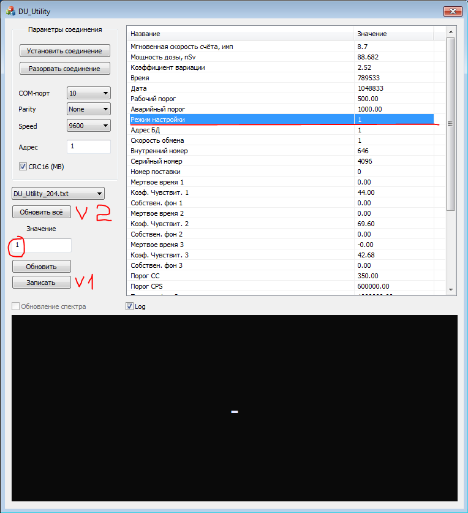

Настройка БДКГ-204
- Получить блоки детектирования(после прошивки), присвоить номера. НОМЕРА НЕ КЛЕИТЬ НА КОРПУС! В перечень записать дату, количество блоков отданных в настройку и ФИО регулировщика.
- Подключить БД к SARKtech. Потребление рабочего блока ~70 мА.
- Присвоить блокам различные адреса от 1 до 32
- Пароль — время без :
- Записать внутренний номер (в ид. данные)
- Записать пороги 500 и 1000 (в пороги)
- Установить на время настройки время интегрирования равным 6
- Перед настройкой снять колпачок с блока.
- Заполнить базу настройки в соответствии с требуемыми параметрами:
- Установить Uвыс резисторами R7 и подстроечным R8 на плате преобразователя напряжения по показаниям от
ОСГИ (если номинал R7 увеличиваем — показания увеличиваются).
Ошибка загрузки

- Проконтролировать напряжение на подстроечном R8, записать в таблицу.
- Приработать не мене 24 часов.
- Перепроверить показания по 137Cs.
- Установить Uпорог на резисторе R23 равным 10мВ и зафиксировать показания прибора по
109Cd (записать в таблицу).

- Проконтролировать напряжение на выводе №1 D4.1 на плате преобразователя напряжения в 1 и 3 диапазоне. (напряжение на выводе №1 D4.1 в 3 диапазоне осуществляется регулировкой R24 на плате преобразователя, но не более 8 В).
- Проверить отсутствие показаний прибора во 2 и 3 диапазоне на фоне. Если показания присутствуют, то убрать резистор R5 на плате преобразователя тока. Если показания всё равно присутствуют (во 2-ом диапазоне пару мЗв/ч и в 1-ом в 2-3 раза выше фоновых), то проверить частоту раскачки на плате тока (ТИАЯ.411544.005), на выводе 15U. Если частота не 16 кГц (примерно 100 кГц), то подпаять или перепаять кварцевый резонатор B1
- Проконтролировать напряжение и форму пробоя светодиода.
- Измерить напряжения Uвыс в 1 и 3 диапазоне. Настроить 3-й диапазон с помощью R24 и R27 на плате преобразователя напряжения (R27 не более 1МОм).
- Записать данные настройки в таблицу.
- Приработать не менее 40 часов.
- Перепроверить показания по 137Сs и 109Cd.
- Отдать на линейку
- Отдать на корпуса
- Отдать на линейку
- Проверить БД на герметичность. После успешного прохождения наклеить круглую наклейку "ГЕРМЕТИЧНО HERMETICALLY SEALED +" сверху слева от разъёма и выше места для наклейки
- Проверить на тряску взяв из партии 4 прибора (из расчёта на 20-30 штук)
- Подготовить БД к работе в СРК
Начальные коэффициенты
Если меняются основополагающие элементы (светодиод или ФЭУ) или просто требуется заново перенастроить прибор, то желательно установить "нулевые" коэффициенты, а именно:
| 1-ый диапазон | 2-ой диапазон | 3-ий диапазон | |
|---|---|---|---|
| Мёртвое время | 0 | 0 | 0 |
| Коэффициент | 45 | 70 | 20 |
| Собственный фон | 0 | 0 | 0 |
Превышение показаний на фоне
Если на фоне в 1-ом диапазоне показания мощности дозы несколько мкЗв при скорости счета более 200 — это не вычитывается из счетных импульсов импульс светодиода. Пересмотреть сигнал DIS на плате преобразователя напряжения: задержка между спадом на VT1 (D1.12) и DIS (D1.4) должна быть не более 125нс. При использовании D1 IN74HC14AD время задержки составляет 200нс — это критично. Для работы с D1 IN74HC14AD требуется сместить задержку импульса светодиода, увеличением сопротивления резистора в цепи затвора VT1 до ~560Ом. Если это не поможет, то следующим шагом убрать конденсатор С26.
БДКГ-204 с протоколом MODBUS
- Перепрошить блок на прошивку с обменом по протоколу MODBUS (Fileserver\Manufacture\Uchastok.RIR\programming\SRK\BDKG-204_MODBUS). Блок потребуется разобрать.
- Перепроверить блок на герметичность. Перепроверка на линейке НЕ требуется.
- Запустить "DU_Utility". Если это первый запуск, то для начала потребуется скопировать файл в формате DU_Utility_name.txt (Текстовый документ), где name - требуемый блок (в нашем случае это 204), по пути C:\ProgramData\ATOMTEX\DU_Utility.
- Установить преднастройки обмена (порт, скорость, чётность, адрес), установить флажок CRC16 (MB) и выбрать текстовый файл требуемого блока. После нажать кнопку "Установить соединение".
- В окне справа появится список команд. Для полного доступа к изменению всех команд требуется выбрать (нажать на) команду "Режим настройки" и слева, в поле "Значение", прописать "1" и нажать на кнопку "Записать". Нажать кнопку "Обновить всё". 
- "Обновить всё" обновляет все команды;
- "Обновить" - только ту команду, которая выбрана;
- "Записать" - записать значение в поле "Значение" в выбранную команду.